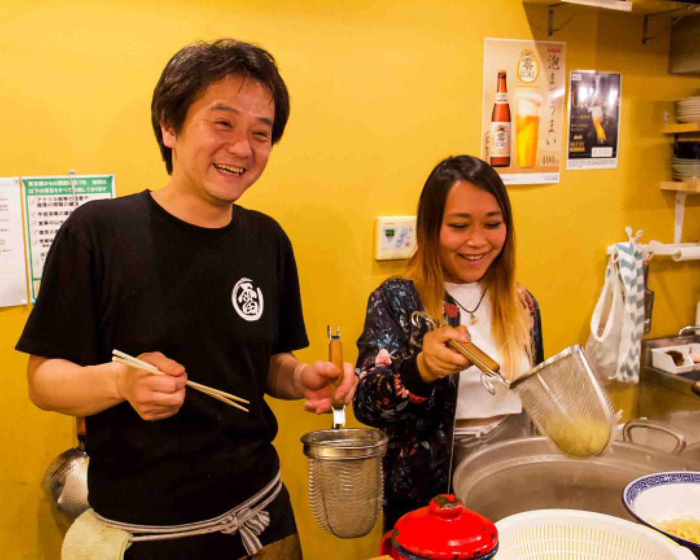
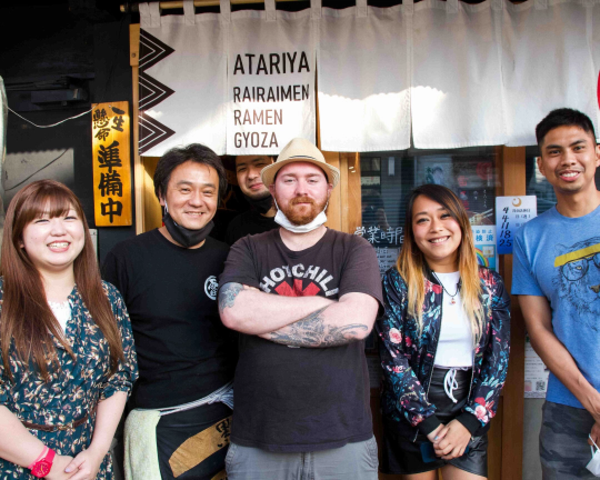

Sushi Making Classes:
Five week course in Tallinn
Hands-on workshops, often combined with local fish market tours (e.g., Tsukiji in Tokyo), teaching rice preparation and fish handling.

Hands-on workshops, often combined with local fish market tours (e.g., Tsukiji in Tokyo), teaching rice preparation and fish handling.

Focus on pub-style food, such as savory pancakes (okonomiyaki), gyoza, and yakitori skewers.